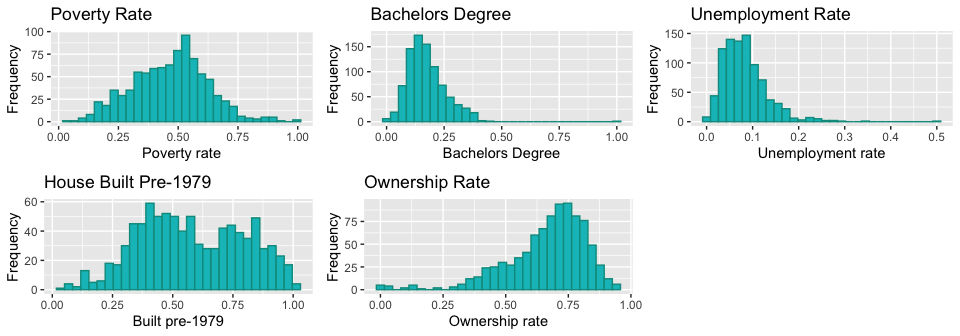
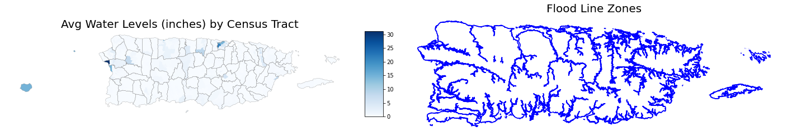
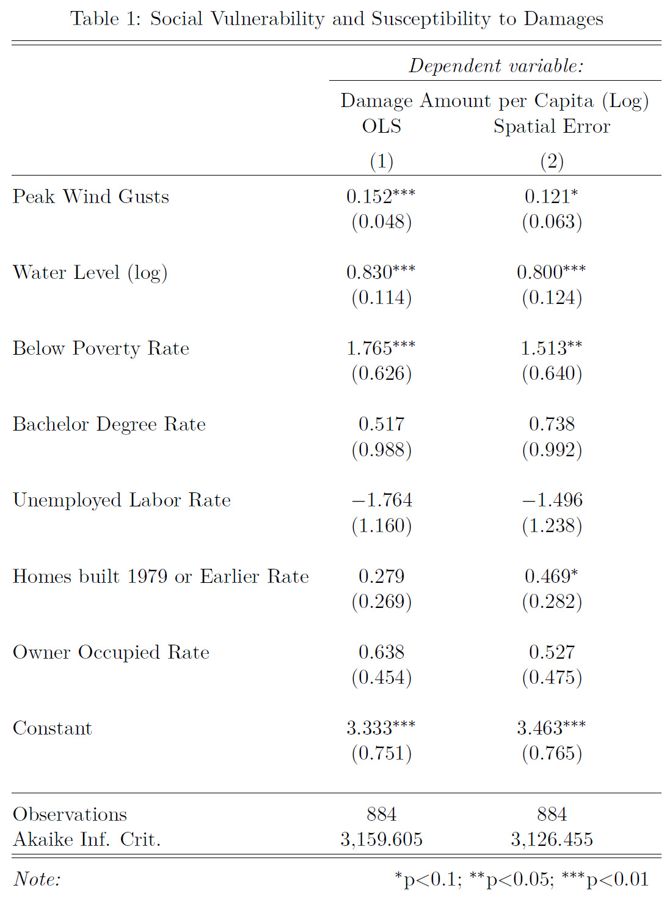

Results
The Random Forest Regressors predicted the relevant components of the Housing Assistance program and the results indicate that Puerto Rico did not receive an entirely equitable allocation of Housing Assistance aid, compared with Florida and Texas.
The Repair/Replacement Assistance predictions were very similar to the actual amount of aid allocated, differing by just -0.2%. This is a reassuring finding, as housing repairs and replacement homes amounted to $529M and accounts for 83% of all Housing Assistance aid allocated by FEMA in response to Hurricane Maria. This findings reinforces one of the guiding principles which underpins the Housing Assistance Program - that aid is allocated consistently. That is, based on the damages sustained, a consistent amount of aid has been allocated for households that were inspected.
For Rental Assistance, the model however predicted that $155M should have been paid out in aid, 46% more than the $106M actually allocated. Put another way, the $49M gap indicates that Puerto Rico received 32% less in Rental Assistance aid than would otherwise be expected, based on the monetary amounts awarded to Florida and Texas.
Rental Assistance provides impacted households with a financial stop-gap which allows them to transition to more habitable accommodation, if available. Analysis of FEMA’s IHP Valid Registrations dataset revealed that approximately 20% of program applicants were unable to claim Rental Assistance aid, due to a lack of alternative housing in Puerto Rico. A likely explanation for this is that the entire island was decimated by Hurricane Maria and unlike most mainland U.S. states, Puerto Rico does not have any neighbouring states within which residents can seek refuge. Therefore, Puerto Rico presents somewhat of a unique case to FEMA in terms of their disaster preparedness and recovery process.
Every county in Puerto Rico was estimated to have experienced a shortfall in Housing Assistance aid, relative to Florida and Texas. On average, Puerto Rico received a shortfall of 7.3% and this was primarily driven by the Rental Assistance gap described previously. Interestingly, the largest estimated gap (-15.9%) occurred in San Juan Municipio, which encompasses the island’s capital city of San Juan, and is the most populous county in Puerto Rico. A plausible explanation is that San Juan also has the largest percentage of renters of all counties, accounting for 46% of households. This likely contributed to a greater influx in Rental Assistance applications, many of which were not allocated aid due to a lack of alternative housing being available.
Another county of note is Ponce Municipio, estimated to have experienced a shortfall of 6.7% in Housing Assistance aid. Ponce sustained the largest amount in FEMA-estimated damages ($47M) and similarly received the most in Housing Assistance aid ($26M). The amounts awarded for housing repairs and replacements homes was the most of any county. Ponce also had a relatively low proportion of rental assistance applications which explains why the county experienced a more favorable Housing Assistance shortfall than San Juan. For reference, Ponce and San Juan were allocated similar amounts in Housing Assistance aid, $26M and $24M respectively, yet San Juan residents were unable to benefit from aid to the same extent.
Abstract
This research examines the relationship between social vulnerability factors and observed damages in the state of Puerto Rico following Hurricane Maria. We use spatial linear regression models to identify predictor variables from a subset of socio-demographic and housing indicators for disaster-caused damages to both real and personal property. Data consists of census tracts in the state that reported the need for assistance to FEMA’s Individuals and Households Program (N=884). The results suggest that when controlling for disaster-specific factors, such as peak wind gusts and water levels, communities with greater poverty rates suffered more damages, on average. This finding highlights that perhaps more emphasis should be placed on these vulnerable groups in disaster response and recovery planning.
Introduction
The United Nations International Strategy for Disaster Reduction (UNISDR) defines vulnerability as “the characteristics and circumstances of a community, system or asset that make it susceptible to the damaging effects of a hazard” (UNISDR 2009, p. 30). And prior research has shown that vulnerability is the propensity for loss of lives, livelihood or property when exposed to a hazard [1]. To that effect, our study assesses the relationship between socio-demographic factors and observed property damages in the aftermath of Hurricane Maria, a category four hurricane that moved diagonally across the island, devastating both land and life. All 78 municipalities in Puerto Rico were deemed eligible for Individual Assistance by FEMA.
Research identifying social factors that lead to a higher propensity for property damages have included renter status, income, race and poverty [2]. As a result, we chose to include a subset of socio-demographic and housing indicators that we felt were relevant based on prior work. The social factors we include are at the census tract level, which means that the relationships in this study apply to broader geographic scales rather than at the individual level.
Data & Methods
Damages Data
Once disaster survivors register for the Individuals and Households assistance, FEMA is required to verify losses to determine their eligibility for IHP Assistance (IHP Unified Guidance 2016, p. 41). A FEMA inspector assesses disaster-caused damages to the applicant’s pre-disaster residence and personal property such as furniture, appliances, vehicles, and essential equipment for daily household needs, and this dollar value is subsequently recorded. Our research utilizes these applicant-level attributes that have been made available through OpenFEMA’s public API. The individual damage data is aggregated at the census tract level and a per-capita value is calculated using population data available for the census tract from the US Census Bureau’s 2017 American Community Survey, 5-year estimates. The distribution is highly skewed (see fig), and so we perform a log transformation of the variable which serves as our outcome variable of interest.

Social Vulnerability Data
The socio-demographic and housing indicators for this study are sourced from the U.S. Census Bureau’s 2017 American Community Survey, 5-year estimates. We download and calculate the following indicators that are available at the census tract level: Below Poverty Rate, Bachelor’s Degree Rate, Unemployed Labor Rate, Homes built 1979 or Earlier Rate, and Owner Occupied Rate. These variables serve as the predictors for our analysis.

Hurricane Wind Speeds
We include hurricane peak wind gusts to control for disaster-specific factors using the wind speed data made available by Applied Research Associates, Inc. (ARA). Hurricane wind speeds can be used to estimate potential property damage using the Saffir-Simpson Hurricane Wind Scale. We calculate average wind speed and a corresponding wind scale value for each census tract for the state. Including this data in the analysis allows us to examine the hurricane impact to communities that had different levels of social vulnerability but experienced similar wind speeds.

Water Levels
Another control for disaster-specific factors is the measured water levels. During a FEMA on-site inspection, the total depth of water affecting the damaged dwelling, in inches, is recorded. Once again using the OpenFEMA’s public disaster dataset, we calculate the average water level recorded for each census tract. This is visually compared to Puerto Rico’s flood lines as a verification of the data to be used to control for flood-related damages.
Regression Models
Ordinary Least Squares (OLS)
We developed OLS Regression Models with the per-capita damage amount as the outcome variable of interest, and the list of socio-demographic and housing indicators from above as independent variables. The hurricane wind speed and water level attributes were used as controls for disaster-specific factors. However, our models showed violation of regression assumptions with a failing studentized Breusch-Pagan test (p-value = 0.000000000001787) that indicates the presence of heteroskedasticity.
Regressions using observations from spatial data, such as US census tracts, can be influenced by spatial autocorrelation, which means the observations are not independent of each other. If the model residuals from a regression are spatially clustered beyond random chance, standard regression estimates cannot be trusted, as some variables could inflate the coefficient values, invalidating the tests of significance. The map below shows the residuals from the OLS model.

Spatial Autocorrelation
Moran’s I is a test for spatial dependency in the residuals in an OLS model. In order to run the test, we needed to load the census tract shapefiles (downloaded from the census website) and define a list of neighbors with boundaries. We have a total of 886 regions and 5136 non-zero links between them, with the average number of links being 5.8. This is visualized below:

The results of the Global Moran's I for regression residuals had a p-value=2.935e-10, which means we had to reject the null hypothesis that there is no spatial dependency between the residuals.
If the residuals are diagnosed to be spatially dependent, a remedial measure is to expand the linear regression model to a spatial linear regression model as indicated by the results of the Lagrange Multiplier test. The test evaluates the appropriateness of the spatial lag model and the spatial error model, and in the event that both lag and error dependence are found to be significant, we use the results of the Robust LM test. Based on the results from the test (see table below), we fit a spatial error model to our dataset.

Spatial Error Model
A spatial error model evaluates the extent to which the clustering of an outcome variable not explained by measured independent variables can be accounted for with reference to the spatial clustering of error terms. And in a sense it will correct for standard statistical procedures for the effect of spatial dependence [3]. Once the spatial error model has been fit, we can evaluate it using the spatial Hausman test with the null hypothesis that the SEM and the OLS models are giving us the same estimates. We fit a SEM model to the dataset using the neighbors defined above and the results of the spatial Hausman test (p-value = 0.07219), indicate that the SEM estimates are valid.
Results
The table below shows the results of the OLS and Spatial Error model(s). Given that our OLS models showed signs of heteroskedasticity, we needed to examine the influence of spatial autocorrelation, since if present, it would likely bias any resultant inferences. And as we found evidence of spatial dependence, we will not be discussing the results of the OLS model, and the coefficients and tests of significance are presented alongside those of the spatial error model for the reader to compare.
We found that both peak wind gusts and water levels were significant predictors of damages. This is expected as higher wind speeds and water levels are both correlated with disaster-caused damages to property. It is interesting to note however that peak wind gusts appear to be less significant in the SEM model compared to the OLS model, and this is probably related to the fact that we are examining the effects of a natural disaster, which follows a certain path making certain geographic clusters more susceptible to the effects of the storm. We observe that Below Poverty Rate is a significant predictor of damages (p-value=0.01805). For every unit increase in the below poverty rate, we can expect an increase of approximately 1.5% in the amount of damages per capita. This is not only a statistically significant but also a practically significant finding. We also find that communities with a greater number of homes built in the year 1979 or earlier, suffer more damages, on average.
Discussion
These results of our study highlight the disproportionate post-disaster outcomes for specific communities in that poverty is found to be significantly correlated with property damages. This finding does suggest that perhaps more emphasis should be given to these vulnerable populations during disaster response and recovery. A limitation of this study is that it only accounts for populations that applied for Individual Assistance and whose properties were inspected by FEMA. We are unable to include damage data for applicants who were unable to register for assistance, perhaps due to accessibility issues, or who were denied inspections. Furthermore, we chose to include only a subset of socio-demographic indicators from a vast collection of data points available through the Census Bureau, and further research could include additional characteristics (race, gender, household composition, language, minority status). Nevertheless, this research provides important insights into post-disaster needs by highlighting specific vulnerable groups in the state of Puerto Rico requesting assistance following Hurricane Maria.
References
- Using Disaster Outcomes to Validate Components of Social Vulnerability to Floods: Flood Deaths and Property Damage across the USA, https://www.mdpi.com/2071-1050/12/15/6006
- Social vulnerability to environmental hazards, https://onlinelibrary.wiley.com/doi/abs/10.1111/1540-6237.8402002
- https://ibis.geog.ubc.ca/~brian/workshop/GeoDa_Spatial_Regression.pdf
- https://svi.cdc.gov/A%20Social%20Vulnerability%20Index%20for%20Disaster%20Management.pdf
- Assessing the Relationship between Social Vulnerability, Social Capital, and Housing Resilience, https://www.mdpi.com/2071-1050/12/18/7718/htm
- https://rpubs.com/quarcs-lab/tutorial-spatial-regression